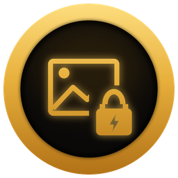
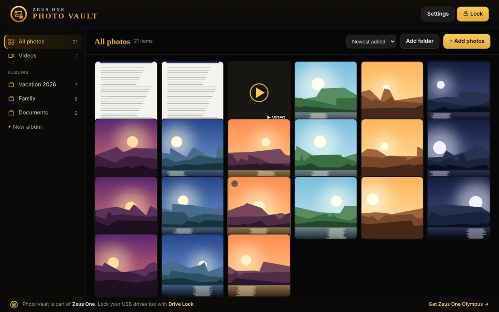
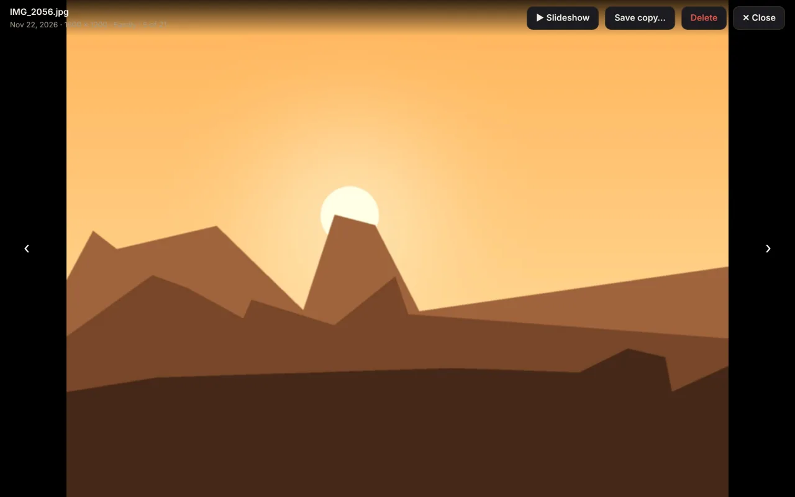

ZEUS ONE
ZEUS ONE

Some photos are
just for you.
Zeus One Photo Vault keeps private photos and videos in a password-locked, encrypted gallery on your Windows PC, away from the Photos app, Windows search, screen shares and cloud sync.
Get it on the Microsoft Store
What it does
Everything is encrypted with AES-256 and opens only with your password (or your Recovery Key).
Photos in the vault don't show in the Photos app, search, recent files or OneDrive. Optionally delete the originals once they're safely inside.
Thumbnails, full-screen viewing, slideshows, albums, and videos that play in your normal player.
Press Esc or Ctrl+L to lock instantly. It also locks after a few idle minutes and when you minimize it.

Built not to lose your photos
Each photo is encrypted, written to disk and read back before it's added, and the original is deleted (if you choose) only after that. If the power goes off mid-import, the vault finds and keeps everything that was saved. Your vault lives in your user folder and stays put if you reinstall the app. To move it to a new PC, copy the folder: it stays encrypted.
Encryption: AES-256-GCM, a separate key for every photo. Password: stretched with Argon2id. No backdoor: not even Zeus One can open your vault. If you lose both your password and your Recovery Key, nobody can recover the photos.
Drive Lock password-protects USB drives. Olympus has 23 security and privacy tools in one app. Scam Check is free.
Privacy policy
Effective November 22, 2026 · ProfitHarbor AI LLC ("we"), maker of Zeus One Photo Vault ("the app").
The short version: the app doesn't collect anything. Your photos, videos and password never leave your PC.
| When | What leaves your PC | Sent to |
|---|---|---|
| The app checks or restores your Photo Vault Pro purchase | The standard licence check Windows performs for Microsoft Store apps. | Microsoft Store |
| You click a link in the app | Your browser or the Microsoft Store opens that page as normal. | That website or the Microsoft Store |
Nothing else. Photo Vault doesn't upload, sync or analyze your photos.
What the app stores
Your encrypted vault, in the "Zeus One\Photo Vault" folder in your Windows user folder. A small settings file (your choices and a protected record of your Pro purchase). Your password and keys are kept in memory only while the vault is unlocked and are never saved. Videos you open are temporary copies, deleted when the vault locks.
What we collect
Nothing. We never receive your photos, file names, password, Recovery Key or usage data, and we can't open your vault or reset your password. Purchases are handled by Microsoft under its own privacy terms. If you email us, we use your email only to reply.
Children
The app doesn't collect personal information from anyone, including children under 13.
Changes and contact
If this policy changes, we'll update this page and its date. Questions: support@profitharborai.com
© 2026 ProfitHarbor AI LLC · Zeus One Olympus · Drive Lock · Scam Check · Help